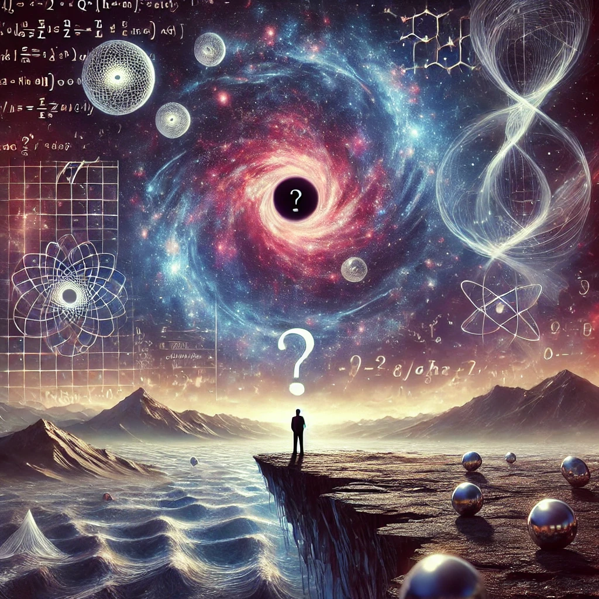

물리학은 어디까지 설명할 수 있는가
목차
작가
자비네 호젠펠더
출판일
2024년
감상평에 대한 AI그림
평소에도 정보제공형 에세이류의 책들을 좋아하는데 그런 성향에 적확한 책이다.
사실, 물리학과 관련된 질문에 답변을 해주는 책이라 이해가 명확히 되지는 않는다.
그러나 여기에 나오는 질문들은 우리가 한번쯤은 생각해봐도 좋을, 그리고 그에 관한 답변들은 나에게 방향성을 제공해주어 물리에 대한 이해가 적은 사람이라도 읽어볼 가치가 있는 책이다.

감상평에 대한 AI 감정평가
이 감상문은 흥미, 도전, 사고의 확장, 가치 발견 등의 감정이 담긴 긍정적인 반응을 보여줘.
특히 물리학이라는 어려운 주제 속에서도 배울 점을 찾고, 사고를 넓혀가는 과정이 강조되고 있어.
즉, 단순히 정보를 얻는 것이 아니라 생각의 방향성을 제시받고, 지적 호기심을 자극받은 책이라는 점이 핵심이야!
결론적으로 "어렵지만 도전할 가치가 있는 책" 이라는 감상이 드러나는 글이네! 😊📖
✨ 내용이 쉽지는 않지만, 이를 받아들이려는 도전적인 태도가 보임.
✨ 단순한 정보 습득을 넘어, 새로운 시각과 사고를 확장하는 경험을 했음을 표현.
✨ 비전공자도 충분히 생각해볼 만한 가치가 있는 책이라는 점에서 긍정적인 평가를 내리고 있음.